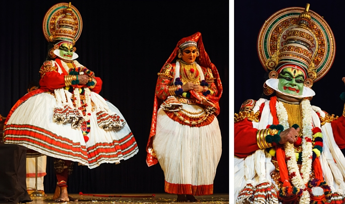
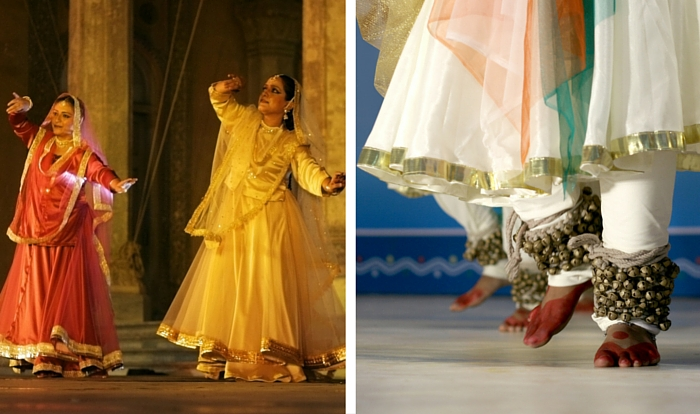

India has had a long romance with the art of dance. The Hindu
Sanskrit texts Nātyaśāstra (Science of Dance) and Abhinaya Darpana (Mirror of Gesture)
are estimated to be from 200 BCE to early centuries of the 1st millennium CE
>
Bharatnatyam
Most popular in South India, Bharatanatyam is the most ancient of all the classical Indian dance forms. Originating in the temples of Tamil Nadu, today it is the most popular and widely performed of all the classical Indian dance styles. Considered to be a fire-dance, the movements of the Bharatanatyam dance resembles a dancing flame. Traditionally, this dance is a solo dance form that can be performed by male or female dancers and is characterized by different features—lasya for feminine movements and tandava for the masculine aspect. In more modern times, this dance has been performed by groups.

Kathakali
This dance form consists of a group of dancers who portray various roles with content based on Hindu mythology. This dance form originated in southwest India in Kerala. Characterized by its dramatic makeup and elaborate costumes, audiences are taken on a visual journey in this dance form. Colors are used to describe character’s moods and status. Angry and evil characters wear red makeup, women are adorned with yellow faces, and the dancers wear large headdresses to add to the dramatic effect.
The hands, facial expressions, and body movements embody and tell the stories in the Kathakali dance form. Traditionally, these dances would start in the evening and last through the night, but now Kathakali can be performed in three-hour presentations.

Kathak
This dance can be traced to northern India in Uttar Pradesh and the storytellers of that time who would recite tales to music. The word Kathak means “to tell a story” and this dance form is characterized by elements that tell the story—emotional facial movement with elements of mime incorporated in the movements. The main focus is the foot movement. This dance is performed with ankle bells well-controlled by the dancer.
Manipuri
Considered to be one of the most meaningful of the dances, the Manipuri dance originated in Northeast India. Purely a religious dance and its aim is a spiritual experience. This dance form is associated with rituals and traditional festivals. Manipuri, like Bharatanatyam, incorporates the tandava and lasya movements. This dance is smooth and fluid with no sharp, jerky movements. A dance-drama, the cymbals, and drums are usually a part of the visual performance.
Kuchipudi
Kuchipudi was traditionally an all-male dance but is now performed by more women than men. This dance form originated in the Krishna district of Andhra Pradesh but is popular all over south India. The Kuchipudi dance style tells a story through fluid, graceful and brisk movements that are well-controlled and bring the piece alive. The dances are based on Hindu religion, spirituality and mythology.
Odissi
Originating from the state of Odisha in eastern India, this dance from has its very own strong characteristic movements that clearly separates it from the other classical Indian dance forms. It is distinguished by stamping of the foot and striking sculptural poses, and the specific importance of the independent, and more contorted movement of the head, chest and pelvis (Tribhangi). Use of the hand movements (mudras) is very important in the Odissi dance, as it represents important things that help to tell the story. Themes for this dance are religious and emphasize Krishna and local themes.
Indian art consists of a variety of art forms, including painting, sculpture, pottery, and textile arts such as woven silk. Geographically, it spans the entire Indian subcontinent, including what is now India, Pakistan, Bangladesh, Sri Lanka, Nepal, Bhutan and eastern Afghanistan. A strong sense of design is characteristic of Indian art and can be observed in its modern and traditional forms.
Rock Art
Rock art of India includes rock relief carvings, engravings and paintings, some (but by no means all) from the South Asian Stone Age. It is estimated there are about 1300 rock art sites with over a quarter of a million figures and figurines.[1] The earliest rock carvings in India were discovered by Archibald Carlleyle, twelve years before the Cave of Altamira in Spain,[2] although his work only came to light much later via J Cockburn (1899).
Mauryan art
The north Indian Maurya Empire flourished from 322 BCE to 185 BCE, and at its maximum extent controlled all of the sub-continent except the extreme south as well as influences from Indian ancient traditions, and Ancient Persia,[18] as shown by the Pataliputra capital.
Mughal Art
Although Islamic conquests in India were made as early as the first half of the 10th century, it wasn't until the Mughal Empire that one observes emperors with a patronage for the fine arts. Emperor Humayun, during his reestablishment of the Delhi Sultanate in 1555, brought with him Mir Sayyid Ali and Abd al-Samad, two of the finest painters from Persian Shah Tahmasp's renowned atelier.
Sclupture
The first known sculpture in the Indian subcontinent is from the Indus Valley civilization (3300–1700 BC), found in sites at Mohenjo-daro and Harappa in modern-day Pakistan. These include the famous small bronze male dancer. However such figures in bronze and stone are rare and greatly outnumbered by pottery figurines and stone seals, often of animals or deities very finely depicted. After the collapse of the Indus Valley civilization there is little record of sculpture until the Buddhist era, apart from a hoard of copper figures of (somewhat controversially) c. 1500 BCE from Daimabad.
Wall Painting
The tradition and methods of Indian cliff painting gradually evolved throughout many thousands of years - there are multiple locations found with prehistoric art. The early caves included overhanging rock decorated with rock-cut art and the use of natural caves during the Mesolithic period (6000 BCE). Their use has continued in some areas into historic times.[70] The Rock Shelters of Bhimbetka are on the edge of the Deccan Plateau where deep erosion has left huge sandstone outcrops. The many caves and grottos found there contain primitive tools and decorative rock paintings that reflect the ancient tradition of human interaction with their landscape, an interaction that continues to this day.
Miniature Painting
Although few Indian miniatures survive from before about 1000 CE, and some from the next few centuries, there was probably a considerable tradition. Those that survive are initially illustrations for Buddhist texts, later followed by Jain and Hindu equivalents, and the decline of Buddhist as well as the vulnerable support material of the palm-leaf manuscript probably explain the rarity of early examples.
Indian art consists of a variety of art forms, including painting, sculpture, pottery, and textile arts such as woven silk. Geographically, it spans the entire Indian subcontinent, including what is now India, Pakistan, Bangladesh, Sri Lanka, Nepal, Bhutan and eastern Afghanistan. A strong sense of design is characteristic of Indian art and can be observed in its modern and traditional forms.
Rock Art
Rock art of India includes rock relief carvings, engravings and paintings, some (but by no means all) from the South Asian Stone Age. It is estimated there are about 1300 rock art sites with over a quarter of a million figures and figurines.[1] The earliest rock carvings in India were discovered by Archibald Carlleyle, twelve years before the Cave of Altamira in Spain,[2] although his work only came to light much later via J Cockburn (1899).
Mauryan art
The north Indian Maurya Empire flourished from 322 BCE to 185 BCE, and at its maximum extent controlled all of the sub-continent except the extreme south as well as influences from Indian ancient traditions, and Ancient Persia,[18] as shown by the Pataliputra capital.
Mughal Art
Although Islamic conquests in India were made as early as the first half of the 10th century, it wasn't until the Mughal Empire that one observes emperors with a patronage for the fine arts. Emperor Humayun, during his reestablishment of the Delhi Sultanate in 1555, brought with him Mir Sayyid Ali and Abd al-Samad, two of the finest painters from Persian Shah Tahmasp's renowned atelier.
Sclupture
The first known sculpture in the Indian subcontinent is from the Indus Valley civilization (3300–1700 BC), found in sites at Mohenjo-daro and Harappa in modern-day Pakistan. These include the famous small bronze male dancer. However such figures in bronze and stone are rare and greatly outnumbered by pottery figurines and stone seals, often of animals or deities very finely depicted. After the collapse of the Indus Valley civilization there is little record of sculpture until the Buddhist era, apart from a hoard of copper figures of (somewhat controversially) c. 1500 BCE from Daimabad.
Wall Painting
The tradition and methods of Indian cliff painting gradually evolved throughout many thousands of years - there are multiple locations found with prehistoric art. The early caves included overhanging rock decorated with rock-cut art and the use of natural caves during the Mesolithic period (6000 BCE). Their use has continued in some areas into historic times.[70] The Rock Shelters of Bhimbetka are on the edge of the Deccan Plateau where deep erosion has left huge sandstone outcrops. The many caves and grottos found there contain primitive tools and decorative rock paintings that reflect the ancient tradition of human interaction with their landscape, an interaction that continues to this day.
Miniature Painting
Although few Indian miniatures survive from before about 1000 CE, and some from the next few centuries, there was probably a considerable tradition. Those that survive are initially illustrations for Buddhist texts, later followed by Jain and Hindu equivalents, and the decline of Buddhist as well as the vulnerable support material of the palm-leaf manuscript probably explain the rarity of early examples.